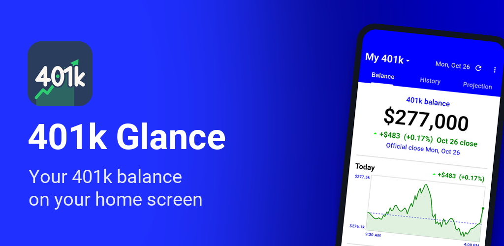
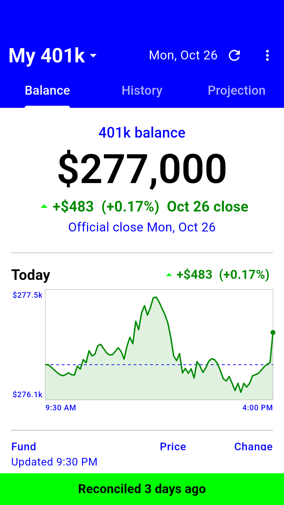
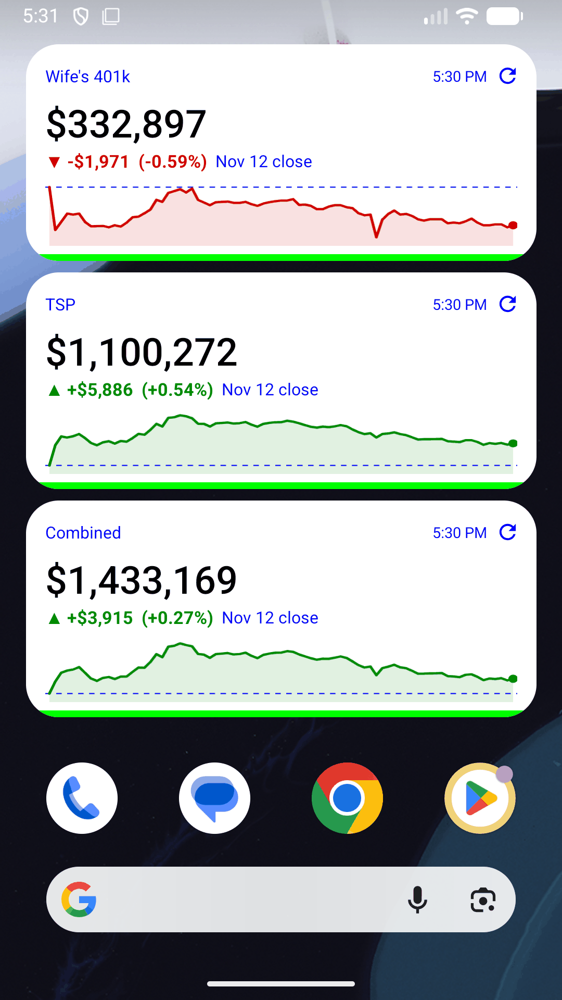
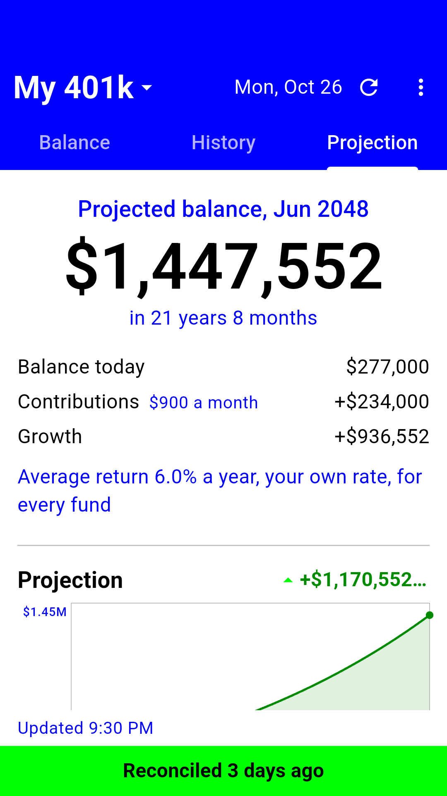
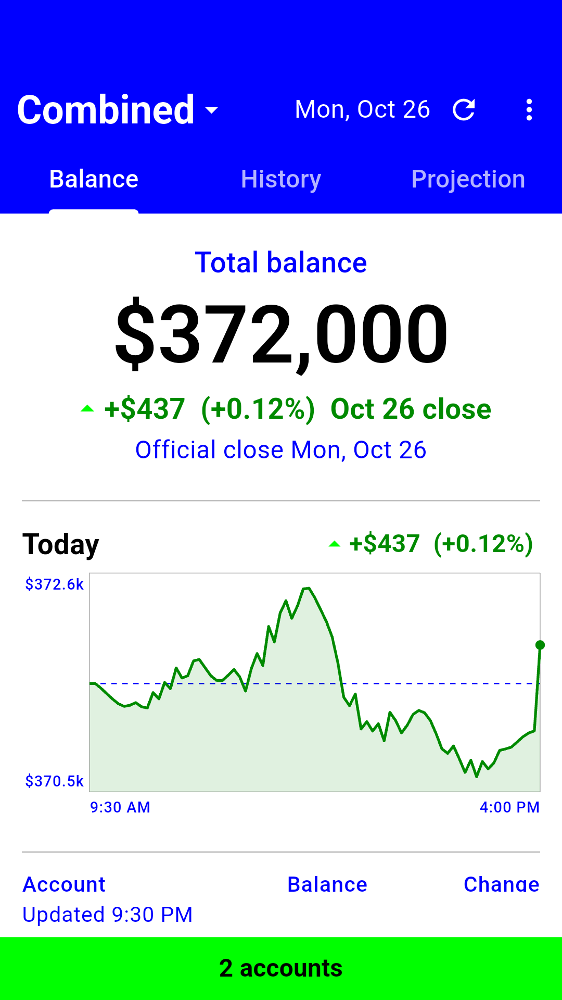

401k Glance

401k Glance is a retirement balance tracker for your 401k or Thrift Savings Plan (TSP), with a home-screen widget. Enter what you hold once, and see what it's worth: the official close, or an estimate while the stock market is open. No logging in to your plan's website, and no sharing your plan's password with anyone. The app never connects to your account.






What it does
- Your 401k balance at a glance, with the day's gain or loss, the fund table and a status bar showing when your numbers were last checked against your statement
- A home-screen widget with the balance and the day's chart, kept up to date in the background, on phones and tablets
- Charts for the day, the month and the year. Tap a history chart to read the date and value at that point
- A retirement calculator that starts from your real balance: pick a date and a monthly contribution, and see where you'd land at your funds' 1, 3, 5 or 10-year average returns, or at a rate you choose
- Made for how 401k and TSP plans work: the Thrift Savings Plan, Fidelity, Empower, Vanguard, Principal, Voya, Transamerica, TIAA, T. Rowe Price, Charles Schwab, Merrill and John Hancock are built in, and you can add any other provider by hand, using ticker symbols
- TSP: the G, F, C, S and I funds and every L fund, at the official daily share prices
- 403(b) and 457 plans work too, when their funds have ticker symbols
- Funds that aren't on the market: follow a collective trust through the closest public fund, or keep a stable value fund at its stated price
- Share a picture of the screen through any app on your phone
- Back up to a file and restore it, even on a new phone
Free, with one optional purchase
401k Glance is free with a small banner ad. An optional one-time Premium purchase, with no subscription, removes the ads and adds up to 5 accounts (your 401k, a spouse's TSP, an old 401k or 403(b)), a Combined page that adds them all up with a household retirement projection, a home-screen widget for each account or for the total, and automatic weekly backups to your Google Drive.
Your holdings stay yours
There's no account to make, no login and no linking to your bank or plan, and Bayland Blue LLC never receives your balances or holdings. To get prices, the app asks public services for the symbols of your funds, never for your amounts. See the privacy policy.
Good to know
401k Glance shows estimates for your information. It isn't financial advice, and your plan's own statement is the official record. It isn't affiliated with or endorsed by any plan provider named on this page. Thrift Savings Plan prices come from the public website tsp.gov; 401k Glance is a private app and does not represent any government agency.
Support
Questions, feedback or bug reports: support@baylandblue.com